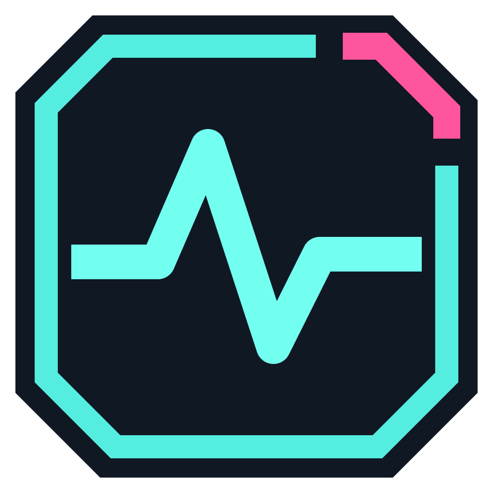

System
Bio
Mon
Overlay
Share
Settings
System vitals
Connecting to sensors…
Theme
View
Cards
Compact
History
60 seconds
5 minutes
Overlay
×
Show always-on-top overlay
Only show during games
Hides the overlay when you switch away from the game.
Lock position and pass clicks through
Vitals shown
Essentials
My selected metrics
All available sensors
Layout
Horizontal strip
Stacked rows
Position
Choose a position…
Top left
Top center
Top right
Bottom left
Bottom center
Bottom right
Text size
Small
Medium
Large
Background opacity
Show trend lines
Phone dashboard
×
Share a read-only view with a phone or tablet on the same network.
Pairing link
Start sharing
Monitor settings
×
Keep dashboard on top
Dashboard refresh rate
Displayed metrics
Threshold alerts
Add alert